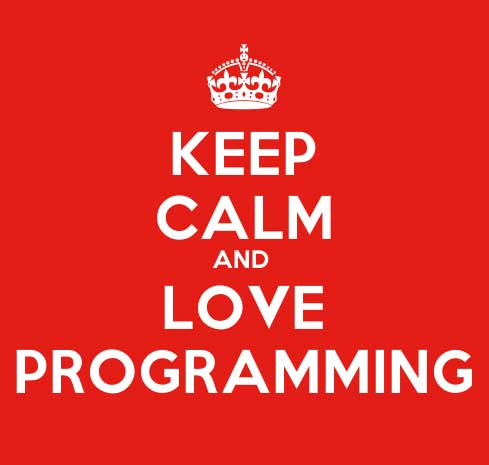

这篇文章在Medium上人气很旺，转发量和评论数都爆表。原作者回顾了自己漫长的编程学习之路，从中总结了个人经历，走过的弯路和各种教训。
学习编程基本就是在学习建造东西。如果你知道你到底想造什么，你的编程学习之路将会豁然开朗。
如果你的目标只是“学习如何编程”，却不知道自己到底想写出什么样的程序，也不知道这些程序将如何让你的生活变得更美好，你很有可能会感到编程学习令你沮丧受挫。
说起来还有点丢脸，我最早想学习编程，是因为我想证明我聪明。并且，我也想做一份属于聪明人的工作。我还喜欢思考数学及理论。因此，编程怎么看都和我很搭。
但是这些想法都不足以延续我的编程学习热情。直到有一天，当我终于发现如何将科技（编程）与我的真爱---音乐和文学---联系在一起时，我才真正爱上编程。
那么，你到底想用编程来干嘛呢？
网站？游戏？iPhone应用？一个让你暴富的初创公司？交互式艺术作品？
你是想让你的老板对你刮目相看，还是想写个程序让电脑帮你完成一个枯燥的任务，以让你能花更多的时间看水獭的萌照？
也可能你只是想在职场中更具竞争力，为你的简历加一个潮词（编程），或者满足你学校的毕业要求。
这些都是有价值的目标。你需要搞清楚自己的目标，然后有针对性地学习。
2、编程一点也不神秘，一点也不难。编程和其他技能没有本质差别。就像语言学习里有语法和单词；就像数学里有不同的步骤和不同的题目；就像所有的技艺和手艺，编程里也有前人总结的针对不同任务的技巧，工具，和好的习惯。
这些东西，你都可以自由使用，修改，或者弃用。
有个人曾这样断定，程序大牛和编程界的芸芸众生之间有一个明显的区别---后者往往缺乏足够的智慧在编程界获得真正的成功。在这个人看来，这种智慧包含对指针 (pointers) 和递归 (recursion) 的理解。
我在学校曾学过指针和递归。在学生时代，能理解指针和递归的感觉真心超级爽。这种快感激发我踏上了计算机学习之路。
但在课堂练习之外，我极少有需要去碰这两个概念。并且，当我在教别人如何学习编程时，我也一次又一次地发现，人们不用这两个概念也能写出很有趣很赞的程序。
所以，不要害怕，也不要去想自己是否足够聪明。想这些都没意义。是的，编程任务越复杂，越难懂，你就需要越高超的技巧才能完成。
但哪个领域不是如此呢？除非你这辈子就靠编程讨生活了，否则你不太可能需要去理解编程中的递归。
3、没人能一次搞定。当你第一次学习编程时，你会很快撞上这么个问题。你觉得你已配置好一切了，你查了又查，但你的代码就是有！问！题！你对如何排错毫无头绪。
错误信息（如果运气好你有的话）很有可能对你说的是---“我了个大艹”。这个时候，你很有可能想要放弃。你觉得你永远不可能搞定，觉得自己就不是编程的料。
嘿！当我第一次尝试编写C++程序，运行，却只得到 “segmentation fault” 这样的错误代码时，我也有过一样的沮丧感。
但是这种经历对任何一个水准的程序员而言，都再正常不过了。有过这种经历，并不代表你的智商，技术悟性，或你和编程的适合度有任何问题。
不管你是编程新兵，还是程序大牛，你都会遇到这样的经历。而新兵和大牛的区别就在于如何对待这样的经历。
新兵和大牛的一大区别就是信念。什么信念呢？
就是深信出错的原因是符合逻辑的，并可以找到的，深信问题可以被解决，深信总有办法实现自己的目标。从0到1之路也许并不明显，但只要你有耐心，你通常都可以找到。
4、总有人说你做的不对。大括号{}应该怎么放放？该不该不用tab来缩进？该不该对代码添加注释？
对于这些问题，大家的做法各有不同。没有谁有标准答案。很多程序员热衷推销自己的偏好的那种处理方式，但这不意味着答案只有一个。
事实上，与那些说我做的不对的人面对面，然后再努力去搞懂他们说的到底是不是对的，这种来来回回，是我职业生涯的压力源之一。
如果你与一个团队的其他成员一起写码，总会有人不认同你的某些行为。
有时他们是对的，但事实上你到底是！对！是！错！永远值得你亲自去推敲。
有时他们纯粹就是无理取闹，你别理他们就好了。
5、总有人会说你不是一个真正的程序员。看看这些说法吧！
“HTML不是真正的编程语言。”
“如果你不用vi，你就不是真正的程序员。”
“真正的程序员得懂C语言。”
“有些人就是不适合编程。”
“有些人就是学不会。”
“你根本就不是真正的程序员，我才是。”
要我说，编程对于不同的人有不同的含义。同时，编程的含义随着时间的流逝也在变化。
有趣的是，那些能让初学者，甚至是编程老鸟，更快上手，更省事的工具，包，框架等往往会被贴上 “真正的程序员不该使用” 这样的标签。
这种贴标签行为背后是一种恐惧：如果任何人都能称自己为程序员，那这个头衔就将毫无意义。不过，我认为这种闭关自守的行为是有害的。
去用那些让写程序变得容易的工具吧。如果那意味着你用 Stencyl 或者 GameMaker 来写游戏，而不是从零开始写一个新的，没事，只管去做。
如果你第一次尝试编程是从HTML或者Excel宏开始，没事，只管去做。哪个（编程方式）你能坚持下去，你就用哪个。
随着你技术不断提升，你就会发现那些便利工具对你的限制大于对你的帮助。那时，你就会去寻找更强大的编程工具。
但大多数时候，很少有人会看你的代码，或者问你用什么编程工具。你的程序到底好不好用才是真正重要的。
6、坚持比方法更重要。关于 “正确编程学习法” 和 “最佳编程学习法” 的文章有很多。的确，学习编程的方法有很多。
你可以看书来学，你可以做练习来学，你可以给别人的程序捉虫来学。当然了，也有很多种编程语言你可以挑选来作为你的第一门语言。
自学型的编程课程或者讲座系列常常有个问题：一开始你总会学得很爽，但难度会陡然上升。
print命令总是很简单，但要真正搞定一个实用程序的编写，往往让人抓狂。你很有可能觉得跟着教程走却并没搞懂，然后你就开始抱怨教程有问题。
当你撞上这个 “编程玻璃顶” 时，那些教程和线上资源对你的意义已经不大了，因为他们默认你已经是一个编程好手了。
更让整个编程学习进阶之路变难的因素是，你根本不知道自己缺什么 (you don’t know what you don’t know) 。甚至，搞清楚自己接下来需要什么都成了难题。
不管上什么编程课，你都会有这么一段 “撞墙期”，唯一的解决办法就是坚持到底。
这意味着你要不断尝试新事物，学习新知识，不断地，一步步地，去解决问题，去编出你要的程序。如果你这时认真回看自己的编程初心，你就更有可能获得成功。
坚持到底，就会胜利。这就是我之前提到的信念的价值所在。如果你真的坚持到底，你就真的会胜利。

原文作者：Cecily Carver
译者：米洛